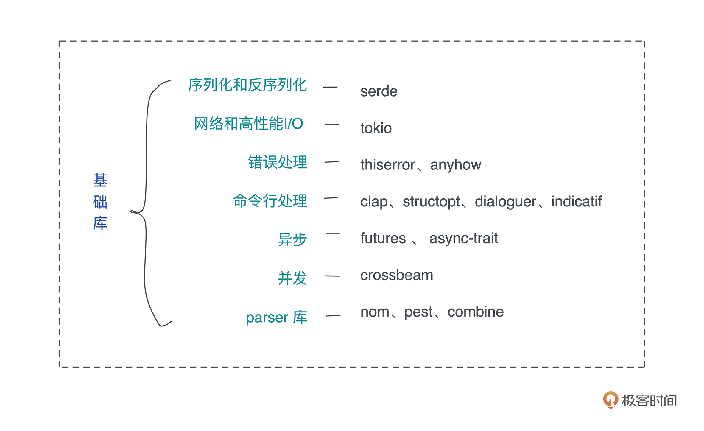

- 00 开篇词 让Rust成为你的下一门主力语言.md.html
- 01 内存：值放堆上还是放栈上，这是一个问题.md.html
- 02 串讲：编程开发中，那些你需要掌握的基本概念.md.html
- 03 初窥门径：从你的第一个Rust程序开始！.md.html
- 04 get hands dirty：来写个实用的CLI小工具.md.html
- 05 get hands dirty：做一个图片服务器有多难？.md.html
- 06 get hands dirty：SQL查询工具怎么一鱼多吃？.md.html
- 07 所有权：值的生杀大权到底在谁手上？.md.html
- 08 所有权：值的借用是如何工作的？.md.html
- 09 所有权：一个值可以有多个所有者么？.md.html
- 10 生命周期：你创建的值究竟能活多久？.md.html
- 11 内存管理：从创建到消亡，值都经历了什么？.md.html
- 12 类型系统：Rust的类型系统有什么特点？.md.html
- 13 类型系统：如何使用trait来定义接口？.md.html
- 14 类型系统：有哪些必须掌握的trait？.md.html
- 15 数据结构：这些浓眉大眼的结构竟然都是智能指针？.md.html
- 16 数据结构：Vec_T_、&[T]、Box_[T]_ ，你真的了解集合容器么？.md.html
- 17 数据结构：软件系统核心部件哈希表，内存如何布局？.md.html
- 18 错误处理：为什么Rust的错误处理与众不同？.md.html
- 19 闭包：FnOnce、FnMut和Fn，为什么有这么多类型？.md.html
- 20 4 Steps ：如何更好地阅读Rust源码？.md.html
- 21 阶段实操（1）：构建一个简单的KV server-基本流程.md.html
- 22 阶段实操（2）：构建一个简单的KV server-基本流程.md.html
- 23 类型系统：如何在实战中使用泛型编程？.md.html
- 24 类型系统：如何在实战中使用trait object？.md.html
- 25 类型系统：如何围绕trait来设计和架构系统？.md.html
- 26 阶段实操（3）：构建一个简单的KV server-高级trait技巧.md.html
- 27 生态系统：有哪些常有的Rust库可以为我所用？.md.html
- 28 网络开发（上）：如何使用Rust处理网络请求？.md.html
- 29 网络开发（下）：如何使用Rust处理网络请求？.md.html
- 30 Unsafe Rust：如何用C++的方式打开Rust？.md.html
- 31 FFI：Rust如何和你的语言架起沟通桥梁？.md.html
- 32 实操项目：使用PyO3开发Python3模块.md.html
- 33 并发处理（上）：从atomics到Channel，Rust都提供了什么工具？.md.html
- 34 并发处理（下）：从atomics到Channel，Rust都提供了什么工具？.md.html
- 35 实操项目：如何实现一个基本的MPSC channel？.md.html
- 36 阶段实操（4）：构建一个简单的KV server-网络处理.md.html
- 37 阶段实操（5）：构建一个简单的KV server-网络安全.md.html
- 38 异步处理：Future是什么？它和async_await是什么关系？.md.html
- 39 异步处理：async_await内部是怎么实现的？.md.html
- 40 异步处理：如何处理异步IO？.md.html
- 41 阶段实操（6）：构建一个简单的KV server-异步处理.md.html
- 42 阶段实操（7）：构建一个简单的KV server-如何做大的重构？.md.html
- 43 生产环境：真实世界下的一个Rust项目包含哪些要素？.md.html
- 44 数据处理：应用程序和数据如何打交道？.md.html
- 45 阶段实操（8）：构建一个简单的KV server-配置_测试_监控_CI_CD.md.html
- 46 软件架构：如何用Rust架构复杂系统？.md.html
- 加餐 Rust2021版次问世了！.md.html
- 加餐 代码即数据：为什么我们需要宏编程能力？.md.html
- 加餐 宏编程（上）：用最“笨”的方式撰写宏.md.html
- 加餐 宏编程（下）：用 syn_quote 优雅地构建宏.md.html
- 加餐 愚昧之巅：你的Rust学习常见问题汇总.md.html
- 加餐 期中测试：参考实现讲解.md.html
- 加餐 期中测试：来写一个简单的grep命令行.md.html
- 加餐 这个专栏你可以怎么学，以及Rust是否值得学？.md.html
- 大咖助场 开悟之坡（上）：Rust的现状、机遇与挑战.md.html
- 大咖助场 开悟之坡（下）：Rust的现状、机遇与挑战.md.html
- 特别策划 学习锦囊（一）：听听课代表们怎么说.md.html
- 特别策划 学习锦囊（三）：听听课代表们怎么说.md.html
- 特别策划 学习锦囊（二）：听听课代表们怎么说.md.html
- 用户故事 绝望之谷：改变从学习开始.md.html
- 用户故事 语言不仅是工具，还是思维方式.md.html
- 结束语 永续之原：Rust学习，如何持续精进？.md.html
- 捐赠
27 生态系统：有哪些常有的Rust库可以为我所用？
你好，我是陈天。
一门编程语言的能力，语言本身的设计占了四成，围绕着语言打造的生态系统占了六成。
[之前]我们对比过 Golang 和 Rust，在我看来，Golang 是一门优点和缺点同样突出的语言，Golang 的某些缺点甚至是很严重的，然而，在 Google 的大力加持下，借助微服务和云原生的春风，Golang 构建了一个非常宏大的生态系统。基本上，如果你要做微服务，Golang 完善的第三方库能够满足你几乎所有的需求。
所以，生态可以弥补语言的劣势，编程语言对外展现出来的能力是语言+生态的一个合集。
举个例子，由于不支持宏编程，Golang 在开发很多项目时不得不引入大量的脚手架代码，这些脚手架代码如果自己写，费时费力，但是社区里会有一大票优秀的框架，帮助你生成这些脚手架代码。
典型的比如 kubebuilder，它直接把开发 Kubernetes 下 operator 的门槛降了一大截，如果没有类似的工具，用 Golang 开发 Kubernetes 并不比 Python 来得容易。反之，承蒙在 data science 和 machine learning 上无比优秀且简洁实用的生态系统，Python 才得以在这两个领域笑傲江湖，独孤求败。
那么，Rust 的生态是什么样子呢？我们可以用 Rust 做些什么事情呢？为什么我说 Rust 生态系统已经不错，且潜力无穷、后劲很足呢？我们就聊聊这个话题。
今天的内容主要是丰富你对Rust生态系统的了解，方便你在做不同的项目时，可以快速找到适合的库和工具。当然，我无法把所有重要的 crate 都罗列出来，如果本文中的内容无法涵盖到你的需求，也可以去 crates.io 自行查找。
基础库
首先我们来介绍一些在各类应用中可能都会用到的库。
先按照重要程度依次简单说一下，方便你根据需要自行跳转：序列化和反序列化工具 serde、网络和高性能 I/O 库 tokio、用于错误处理的 thiserror 和 anyhow、用于命令行处理的 clap 以及其他、用于处理异步的 futures 和 async-trait、用于提供并发相关的数据结构和算法的 crossbeam，以及用于撰写解析器的 nom 及其他。- 
serde
每一个从其他语言转移到 Rust 的开发者，都会惊叹于 serde 及其周边库的强大能力。只需要在数据结构上使用 #[derive(Serialize, Deserialize)] 宏，你的数据结构就能够被序列化和反序列化成绝大多数格式：JSON/YAML/TOML/MsgPack/CSV/Bincode 等等。
你还可以为自己的格式撰写对 serde 的支持，比如使用 DynamoDB，你可以用 serde_dynamo：
#[derive(Serialize, Deserialize)]
pub struct User {
id: String,
name: String,
age: u8,
};
// Get documents from DynamoDB
let input = ScanInput {
table_name: "users".to_string(),
..ScanInput::default()
};
let result = client.scan(input).await?;
if let Some(items) = result.items {
// 直接一句话，就拿到 User 列表
let users: Vec<User> = serde_dynamo::from_items(items)?;
println!("Got {} users", users.len());
}
如果你用过其它语言的 ORM，那么，你可以把 serde 理解成增强版的、普适性的 ORM，它可以把任意可序列化的数据结构，序列化成任意格式，或者从任意格式中反序列化。
那么什么不是“可序列化的数据结构”呢？很简单，任何状态无法简单重建的数据结构，比如一个 TcpStream、一个文件描述符、一个 Mutex，是不可序列化的，而一个 HashMap
tokio
如果你要用 Rust 处理高性能网络，那么 tokio 以及 tokio 的周边库，不能不了解。
tokio 在 Rust 中的地位，相当于 Golang 处理并发的运行时，只不过 Golang 的开发者没得选用不用运行时，而 Rust 开发者可以不用任何运行时，或者在需要的时候有选择地引入 tokio/async-std/smol 等。
在所有这些运行时中，最通用使用最广的是 tokio，围绕着它有：tonic/axum/tokio-uring/tokio-rustls/tokio-stream/tokio-util 等网络和异步 IO 库，以及 bytes/tracing/prost/mio/slab 等。我们在介绍[如何阅读 Rust 代码]时，简单读了 bytes，在 KV server 的撰写过程中，也遇到了这里提到的很多库。
thiserror/anyhow
错误处理的两个库 thiserror/anyhow 建议掌握，目前 Rust 生态里它们是最主流的错误处理工具。
如果你对它们的使用还不太了解，可以再回顾一下[错误处理]那堂课，并且看看在 KV server 中，我们是如何使用 thiserror 和 anyhow 的。
clap/structopt/dialoguer/indicatif
clap 和 structopt 依旧是 Rust 命令行处理的主要选择，其中 clap 3 已经整合了 structopt，所以，一旦它发布正式版本，structopt 的用户可以放心切换过去。
如果你要做交互式的命令行，dialoguer 是一个不错的选择。如果你希望在命令行中还能提供友好的进度条，试试 indicatif。
futures/async-trait
虽然我们还没有正式学习 future，但已经在很多场合使用过 futures 库和 async-trait 库。
标准库中已经采纳了 futures 库的 Future trait，并通过 async/await 关键字，使异步处理成为语言的一部分。然而，futures 库中还有很多其它重要的 trait 和数据结构，比如我们之前使用过的 Stream/Sink。futures 库还自带一个简单的 executor，可以在测试时取代 tokio。
async-trait 库顾名思义，就是为了解决 Rust 目前还不支持在 trait 中带有 async fn 的问题。
crossbeam
crossbeam 是 Rust 下一个非常优秀的处理并发，以及和并发相关的数据结构的库。当你需要撰写自己的调度器时，可以考虑使用 deque，当你需要性能更好的 MPMC channel 时，可以使用 channel，当你需要一个 epoch-based GC 时，可以使用 epoch。
nom/pest/combine
这三者都是非常优秀的 parser 库，可以用来撰写高效的解析器。
在 Rust 下，当你需要处理某些文件格式时，首先可以考虑 serde，其次可以考虑这几个库；如果你要处理语法，那么它们是最好的选择。我个人偏爱 nom，其次是 combine，它们是 parser combinator 库，pest 是 PEG 库，你可以用类似 EBNF 的结构定义语法，然后访问生成的代码。
Web 和 Web 服务开发
虽然 Rust 相对很多语言要年轻很多，但 Rust 下 Web 开发工具厮杀的惨烈程度一点也不亚于 Golang/Python 等更成熟的语言。
从 Web 协议支持的角度看，Rust 有 hyper 处理 http1/http2，quinn/quiche 处理 QUIC/http3，tonic 处理 gRPC，以及 tungstenite/tokio-tungstenite 处理 websocket。
从协议序列化/反序列化的角度看，Rust 有 avro-rs 处理 apache avro，capnp 处理 Cap’n Proto，prost 处理 protobuf，flatbuffers 处理 google flatbuffers，thrift 处理 apache thrift，以及 serde_json 处理我们最熟悉的 JSON。
一般来说，如果你提供 REST/GraphQL API，JSON 是首选的序列化工具，如果你提供二进制协议，没有特殊情况（比如做游戏，倾向于 flatbuffers），建议使用 protobuf。
从 Web 框架的角度，有号称性能宇宙第一的 actix-web；有简单好用且即将支持异步，性能会大幅提升的 rocket；还有 tokio 社区刚刚发布没多久的后起之秀 axum。
在 get hands dirty 用 Rust 实现 thumbor 的过程中，我们使用了 axum。如果你喜欢 Django 这样的大而全的 Web 框架，可以尝试 rocket 0.5 及以上版本。如果你特别在意 Web 性能，可以考虑 actix-web。
从数据库的支持角度看，Rust 支持几乎所有主流的数据库，包括但不限于 MySQL、Postgres、Redis、RocksDB、Cassandra、MongoDB、ScyllaDB、CouchDB 等等。如果你喜欢使用 ORM，可以用 diesel，或者 sea-orm。如果你享受直接但安全的 SQL 查询，可以使用 sqlx。
从模板引擎的角度，Rust 有支持 jinja 语法的 askama，有类似 jinja2 的 tera，还有处理 markdown 的 comrak。
从 Web 前端的角度，Rust 有纯前端的 yew 和 seed，以及更偏重全栈的 MoonZoon。其中，yew 更加成熟一些，熟悉 react/elm 的同学更容易用得起来。
从 Web 测试的角度看，Rust 有对标 puppeteer 的 headless_chrome，以及对标 selenium 的 thirtyfour 和 fantoccini。
从云平台部署的角度看，Rust 有支持 aws 的 rusoto 和 aws-sdk-rust、azure 的 azure-sdk-for-rust。目前 Google Cloud、阿里云、腾讯云还没有官方的 SDK 支持。
在静态网站生成领域，Rust 有对标 hugo 的 zola 和对标 gitbook 的 mdbook。它们都是非常成熟的产品，可以放心使用。
客户端开发
这里的客户端，我特指带 GUI 的客户端开发。CLI 在[之前]已经提及，就不多介绍了。
在 areweguiyet.com 页面中，我们可以看到大量的 GUI 库。我个人觉得比较有前景的跨平台解决方案是 tauri、druid、iced 和 sixtyfps。
其中，tauri 是 electron 的替代品，如果你厌倦了 electron 庞大的身躯和贪婪的内存占用，但又喜欢使用 Web 技术栈构建客户端 GUI，那么可以试试 tauri，它使用了系统自身的 webview，再加上 Rust 本身极其克制的内存使用，性能和内存使用能甩 electron 好几个身位。
剩下三个都是提供原生 GUI，其中 sixtyfps 是一个非常不错的对嵌入式系统有很好支持的原生 GUI 库，不过要注意它的授权是 GPLv3，在商业产品上要谨慎使用（它有商业授权）。
如果你希望能够创建更加丰富，更加出众的 GUI，你可以使用 skia-safe 和 tiny-skia。前者是 Google 的 skia 图形引擎的 rust binding，后者是兼容 skia 的一个子集。skia 是目前在跨平台 GUI 领域炙手可热的 Flutter 的底层图形引擎，通过它你可以做任何复杂的对图层的处理。
当然，你也可以用 Flutter 绘制 UI，用 Rust 构建逻辑层。Rust 可以输出 C FFI，dart 可以生成 C FFI 的包装，供 Flutter 使用。
云原生开发
云原生一直是 Golang 的天下，如果你统计用到的 Kubernetes 生态中的 operator，几乎清一色是使用 Golang 撰写的。
然而，Rust 在这个领域渐渐有冒头的趋势。这要感谢之前提到的 serde，以及处理 Kubernetes API 的 kube-rs 项目做出的巨大努力，还有 Rust 强大的宏编程能力，它使得我们跟 Kubernetes 打交道无比轻松。
举个例子，比如要构建一个 CRD：
use kube::{CustomResource, CustomResourceExt};
use schemars::JsonSchema;
use serde::{Deserialize, Serialize};
// Book 作为一个新的 Custom resource
#[derive(CustomResource, Debug, Clone, Serialize, Deserialize, JsonSchema)]
#[kube(group = "k8s.tyr.app", version = "v1", kind = "Book", namespaced)]
pub struct BookSpec {
pub title: String,
pub authors: Option<Vec<String>>,
}
fn main() {
let book = Book::new(
"rust-programming",
BookSpec {
title: "Rust programming".into(),
authors: Some(vec!["Tyr Chen".into()]),
},
);
println!("{}", serde_yaml::to_string(&Book::crd()).unwrap());
println!("{}", serde_yaml::to_string(&book).unwrap());
}
短短 20 行代码就创建了一个 crd，是不是干净利落，写起来一气呵成？
❯ cargo run | kubectl apply -f -
Finished dev [unoptimized + debuginfo] target(s) in 0.14s
Running `/Users/tchen/.target/debug/k8s-controller`
customresourcedefinition.apiextensions.k8s.io/books.k8s.tyr.app configured
book.k8s.tyr.app/rust-programming created
❯ kubectl get crds
NAME CREATED AT
books.k8s.tyr.app 2021-10-20T01:44:57Z
❯ kubectl get book
NAME AGE
rust-programming 5m22s
如果你用 Golang 的 kubebuilder 做过类似的事情，是不是发现 Golang 那些生成大量脚手架代码和大量 YAML 文件的过程，顿时就不香了？
虽然在云原生方面，Rust 还是个小弟，但这个小弟有着强大的降维打击能力。同样的功能，Rust 可以只用 Golang 大概 1⁄4-1⁄10 的代码完成功能，这得益于 Rust 宏编程的强大能力。
除了 kube 这样的基础库，Rust 还有刚刚崭露头角的 krator 和 krustlet。krator 可以帮助你更好地构建 kubernetes operator。虽然 operator 并不太强调效率，但用更少的代码，完成更多的功能，还有更低的内存占用，我还是非常看好未来会有更多的 kubernetes operator 用 Rust 开发。
krustlet 顾名思义，是用来替换 kubelet 的。krustlet 使用了 wasmtime 作为数据平台（dataplane）的运行时，而非传统的 containerd。这也就意味着，你可以用更高效、更精简的 WebAssembly 来处理原本只能使用 container 处理的工作。
目前，WebAssembly 在云原生领域的使用还处在早期，生态还不够完善，但是它相对于厚重的 container 来说，绝对是一个降维打击。
云原生另一个主要的方向是 serverless。在这个领域，由于 amazon 开源了用 Rust 开发的高性能 micro VM firecracker，使得 Rust 在 serverless/FAAS 方面处于领先地位。
WebAssembly 开发
如果说 Web 开发，云原生是 Rust 擅长的领域，那么 WebAssembly 可以说是 Rust 主战场之一。
Rust 内置了 wasm32-unknown-unknown 作为编译目标，如果你没添加，可以用 rustup 添加，然后在编译的时候指明目标，就可以得到 wasm：
$ rustup target add wasm32-unknown-unknown
$ cargo build --target wasm32-unknown-unknown --release
你可以用 wasm-pack 和 wasm-bindgen，不但生成 wasm，同时还生成 ts/js 调用 wasm 的代码。你可以在 rustwasm 下找到更多相关的项目。
WebAssembly 社区一个很重要的组织是 Bytecode Alliance。前文提到的 wasmtime 就是他们的主要开源产品。wasmtime 可以让 WebAssembly 代码以沙箱的形式运行在服务器。
另外一个 WebAssembly 的运行时 wasmer，是 wasmtime 的主要竞争者。目前，WebAssembly 在服务器领域，尤其是 serverless/FAAS 领域，有着很大的发展空间。
嵌入式开发
如果你要用 Rust 做嵌入式开发，那么 embedded WG 不可不关注。
你也可以在 Awesome embedded rust 里找感兴趣的嵌入式开发工具。现在很多嵌入式开发其实不是纯粹的嵌入式设备开发，所以云原生、边缘计算、WebAssembly 也在这个领域有很多应用。比如被接纳为 CNCF sandbox 项目不久的 akri，它就是一个管理嵌入式设备的云原生项目。
机器学习开发
机器学习/深度学习是 Rust 很有潜力，但目前生态还很匮乏的领域。
Rust 有 tensorflow 的绑定，也有 tch-rs 这个 libtorch（PyTorch）的绑定。除了这些著名的 ML 库的 Rust 绑定外，Rust 下还有对标 scikit-learn 的 linfa。
我觉得 Rust 在机器学习领域未来会有很大突破的地方能是 ML infra，因为最终 ML 构建出来的模型，还是需要一个高性能的 API 系统对外提供服务，而 Rust 将是目前这个领域的玩家们的主要挑战者。
小结：Rust 生态的未来
今天我们讲了 Rust 主要的几个方向上的生态。在我撰写这篇内容时，crates.io 上有差不多七万个 rust crate，足以涵盖我们工作中遇到的方方面面的需求。-

目前 Rust 在 WebAssembly 开发领域处于领先，在 Web 和 Web 服务开发领域已经有非常扎实的基础，而在云原生领域正在奋起直追，后劲十足。这三个领域，加上机器学习领域，是未来几年主流的后端开发方向。
作为一门依旧非常年轻的语言，Rust 的生态还在蓬勃发展中。要知道 Rust 的异步开发是2019年底才进入到稳定版本，在这不到两年的时间里，就出现了大量优秀的、基于异步开发的库被创造出来。
如果给 Rust 更长的时间，我们会看到更多的高性能优秀库会用 Rust 创造，或者用 Rust 改写。
思考题
在今天提到的某个领域下，找一个你感兴趣的库，阅读它的文档，将其 clone 到本地，运行它的 examples，大致浏览一下它的代码。欢迎结合之前讲的[阅读源码的技巧]，分享自己的收获。
感谢你的收听，你已经完成Rust学习的第27次打卡。坚持学习，我们下节课见~
© 2019 - 2023 Liangliang Lee. Powered by gin and hexo-theme-book.